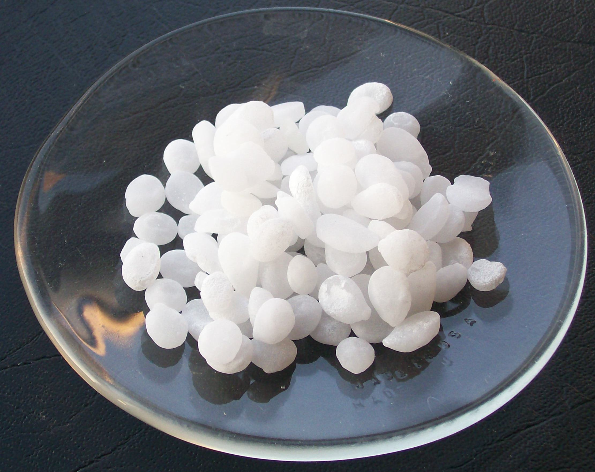

Explicación del experimento:
Este es un tipo de experimento de electrodeposición para que piezas de cobre adquieran una apariencia plateada o dorada.
Los principales materiales para realizar el experimento son el Zinc (Zn), piezas de Cobre (Cu) e Hidróxido de Sodio (NaOH).

Zinc (Zn)

Cobre (Cu)
Hidroxido de Sodio (NaOH)
Se ocupara una Disolucion de Hidroxido de Sodio del 10%
Una vez hecha la Disolucion se le añadira el Zinc.
Proceso de Zinc con la Disolucion de Hidroxido de Sodio:
Zn(s) + 2NaOH(aq) + 2H2 O(l) → Na2[Zn(OH)4](aq) + H2 (g)
Enseguida se le agrega la pieza de cobre y poco a poco adquirirá un color plateado esto debido al exceso de Zinc en la disolución.
Exceso de Zinc:
Zn(s) → Zn2+(aq) + 2e-
Los electrones liberados pasaran a la pieza de cobre la cual actuara como cátodo reduciendo el ion zincato.
Proceso de Reducción:
[Zn(OH)4]2-(aq)+ 2e- → Zn(s) + 4OH-(aq)
Una vez la pieza de cobre este plateada se puede poner al calor y adquirirá un color dorado, esto ya que el Zinc pasará de estar solo por la superficie del cobre a entrar a la red cristalina del este.